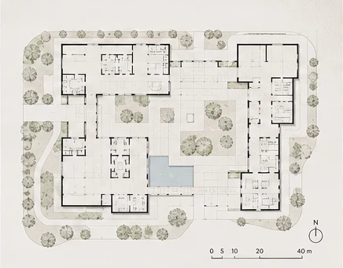
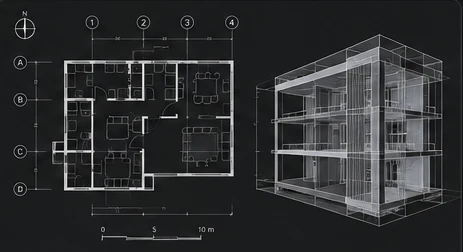

THE PORTFOLIO
Selected work.
Three directions in architectural expression: designing spaces, telling interior stories and articulating buildings through perspective.
INDEX / 001—003


✳ All visuals on this website are AI-generated conceptual illustrations used to communicate project categories and atmosphere.
BEHIND THE IMAGE
Design, documented.
Beyond visual language, my toolkit includes 2D drafting, BIM modeling and construction documentation. These illustrative graphics represent those areas of practice, not issued construction drawings.

